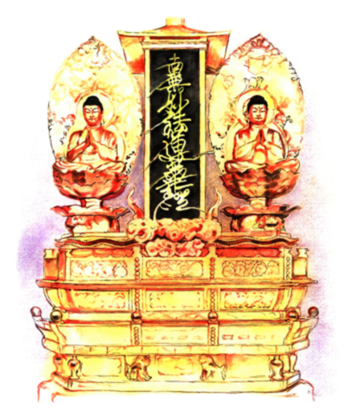

Close this window
Down the center of Omandala Gohonzon is Odaimoku. To the right on the top row is Sakyamuni Buddha and to the left is Taho Nyorai. Below is a picture form.

Sakyamuni Buddha - Odaimoku (Sacred Title) - Taho Nyorai